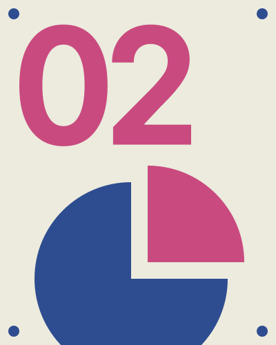

Workshop 02 · with Tim Löhr, data engineer
Reading business
reports with AI.
A metric means only what its card says. Pin down numerator, denominator and period, trace one figure to its rows, then decide.
Should NORTHWIND put more Q3 marketing behind CRAFT, or rework the line first?
The company you work for today
NORTHWIND's September report asks for more money behind CRAFT.
A family-owned consumer electronics maker in Berlin, about 850 people, eight product lines. NORTHWIND and all its data are synthetic.
The decision on the table: rework CRAFT first, or put more Q3 marketing behind it now.
Second-largest revenue line on one of the lowest volumes, and the most quality defects of any line, two months running.
September delivered €21.69M of list-price revenue on 139,056 units, up ~26 % on August. A strong close to FY24 Q2.reports/2023-09-monthly-report.md · §1 Headline
The VP of Sales, §5 of the report
“CRAFT is our premium line: €4.12M on one of our thinnest volumes, and units up 22.4 % on August. And quality is already turning: CRAFT's defects fell from 3.21 to 2.51 per 1,000 units. No other line improved. Let's move more of Q3's marketing budget behind it now.”reports/2023-09-monthly-report.md · §5 The decision on the table
Both numbers are computed correctly. Neither says how it was counted.
Vote first: in September, CRAFT's quality got better, stayed the same or got worse.
Hands up for one. The split goes on the board until slide 4.
data/ncr_records.csv · the same 23 September rows
One file, three answers.
Each count per 1,000 CRAFT units shipped, August against September. All three are computed correctly. The report does not say which one it means.
Dashed: August. B and C share one scale, A has its own. A change under 2 % counts as the same.
The test on metric card 2
Merge the paperwork, and quality “improves”.
Quality merges September's CRAFT records from the same machine in the same week. 23 records become 17. Not one part changed.
data/demand_actuals.csv · CRAFT units shipped per week_start
Five weeks against four.
September holds five week_start values, August four. The month total grows; the week does not.
The tool you take home
The metric card: five lines, plus decision and trigger.
A metric means only what its card says. Pin down numerator, denominator and period, trace one figure to its rows, then decide.
My choices: Defects = <option>, because <one sentence>. Demand = <option>, because <one sentence>. Release condition = <condition>. Write the three into the northwind-metrics Skill under "Metric cards", word for word, and show me only that section.
What you download
Unzip the kit. That folder is your workspace.
Open the unzipped folder in the Claude desktop app, in Code. START-HERE.md has every step.
List the VP's numbers, then compute every option. Claude does not choose for you.
Read data/company-backstory.md and reports/2023-09-monthly-report.md. List every number the VP uses in §5 to argue for more CRAFT marketing, with the section it comes from and whether the report says how it was counted. Do not judge them yet.
Open metric-cards.md. For each card marked OPEN, compute every option listed there for August and September from the files in data/. One line per option: August, September, files and columns used. Do not choose for me.
| Card | Option | Aug | Sep |
|---|---|---|---|
| Defects | A. NCR records per 1,000 | 3.21 | 2.51 |
| Defects | B. Affected units per 1,000 | 310 | 309 |
| Defects | C. Scrapped units per 1,000 | 123 | 168 |
| Demand | A. Month total, units | 7,488 | 9,162 |
| Demand | B. Per shipping week, units | 1,872 | 1,832 |
Trace one figure to its rows. The definition falls out of the trace.
Use my northwind-metrics Skill on reports/2023-09-monthly-report.md. Then trace CRAFT revenue €4,124,238 to its rows: file, columns, filter, number of rows, sum.
What “revenue” means here: units × list price. No discounts, no cost. A high price is not a high margin.
Every tile says how it was counted.
Write the dashboard data and tell me to open it. Then make the call on CRAFT in the Skill's six decision fields. In "counter", give the values the definitions I did not choose would produce.
The same data, counted two ways
The decision depends on the cards.
Same data, two decisions. The metric card says which one holds, and why.
metric-cards.md · release condition
A trigger must not be met by paperwork alone.
The condition under which the extra marketing is released next month. Three checks before you write it into the card.
| Trigger, by numerator | counts units, not records | not met today | period and source named |
|---|---|---|---|
| Release when scrapped CRAFT units in October are below 80 per 1,000 units shipped. | ✓ | ✓168 today | ✓ |
| Release when affected CRAFT units in October are below 250 per 1,000 units shipped. | ✓ | ✓309 today | ✓ |
| Release when CRAFT is below 2.51 records per 1,000 units shipped in October. | ✗Met in September already by merging: 17 records give 1.86. | ✓2.51 today | ✓ |
80 is a little under half of September's 168. The threshold is a setting and the metric card says so.
For any report, any answer
Two prompts to check every answer Claude gives you.
The first separates computed numbers from copied ones. The second asks for a computation, not an opinion.
1. Where each number comes from. Run it now, on your answer to prompt 3.
For every number in your answer, name the file and column. Which did you compute from the data, and which did you take from the report?
2. The other definition. Use it on any metric.
Which other definition of this metric is plausible? Compute it and put both values side by side.

Kit step 5 · what you keep
One metric of your own, on one card.
Open kennzahlen-steckbrief/SKILL.md. Ask me about one metric from my own monthly report, one field at a time: decision, numerator, denominator, period, source, limit, trigger. Write the card into kennzahlen-steckbrief/references/steckbriefe.md. I describe the metric. I do not paste company data.
Next month: put the October report into reports/ and repeat steps 3 and 4. The cards stay; the numbers change.